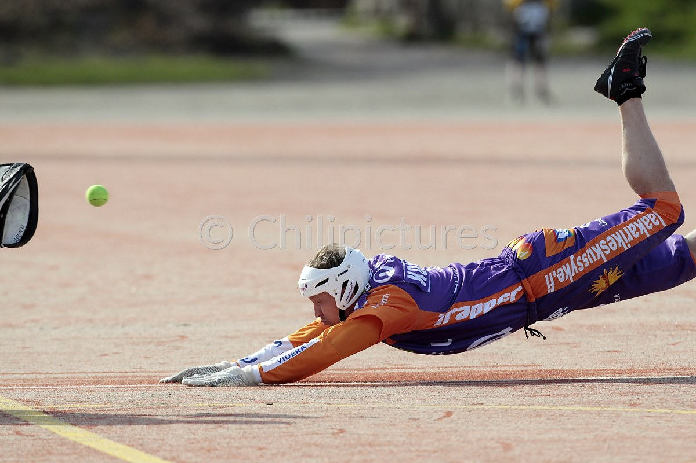

Löydä pesismentori ja menesty!
Mikset mene katsomaan sivua 2 tai sitten voit myös jatkaa sivulle lisäopiskelua varten.
pesismentorin sisältö: mitä se on?
Olen pitkän linjan ”pesäpalloammattilainen”, jolla on vahva intohimo ja kokemus niin kentältä, koulutuksesta kuin hallintotyöstäkin. Pelaajaurani aikana pelasin koko pelaajapolun läpi, 12-vuotiaasta lähtien, miesten mestaruusjuhliin saakka.
Tuona aikana sain kokea sekä henkilökohtaisia että joukkueena saavutettuja huippuhetkiä, ja oppia erityisesti henkisen valmentautumisen tuomat hyödyt. Pelaajana opin joukkuepelaamisen, paineensietokyvyn, suunnitelmallisuuden, tavoitteellisen harjoittelun, testauksen ja tilastoinnin merkityksen – arvoja ja tietoja, joita haluan nyt välittää ja jakaa eteenpäin sekä nykyisille että tuleville pelaajille mentorin roolissa.
Ammatillinen opettajanpätevyyteni ja kokemukseni koulutustehtävissä tarjoavat vahvan pedagogisen pohjan mentoroinnille. Olen toiminut useita vuosia oppilaitoksessa, jossa olen kouluttanut nuoria sekä tukenut heidän kokonais-valtaista kasvuaan.
Pesäpalloliiton johtokunnan ja Superpesis Oy:n hallituksen jäsenyys on tuonut arvokasta kokemusta lajin strategisesta kehittämisestä, päätöksenteosta ja valtakunnallisen junioritoiminnan tukemisesta. Tämän myötä ymmärrän hyvin lajikulttuurin nykytilaa, tulevaisuuden suuntaviivoja ja sen, millaisia henkisiä valmiuksia nuorilta pelaajilta tullaan jatkossa edellyttämään.
Why Bouldering?
tässä on paragrafi eka
tässä on paragrafi toka
Hyvät syyt aloittaa:
- full-body workout
- improves problem solvimg
- builds mental resilience
- and much more ...
Kiinnostuitko menestyksestä? Tästä voit jatkaa.